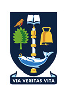

About Me
I am a Ph.D. student in Electrical and Computer Engineering at Rice University, advised by Prof. Santiago Segarra and mentored by Prof. Zhongyuan Zhao. My research studies learning and optimization for complex networked systems, where behavior emerges from the interaction of graph topology, dependency structure, and physical or operational constraints.
My current research interests include:
- Differentiable network digital twins
- Multi-agent learning for networked systems
- Cross-layer resource orchestration
A central thread of my work is embedding structural and algorithmic knowledge into learning systems: using graph neural networks and differentiable models to represent coupled system behavior, multi-agent learning to coordinate distributed decisions, and optimization to enforce domain constraints. I aim to build models that generalize across network sizes and configurations while remaining useful for prediction, optimization, and control.
News
-
2026.08: Advanced to Ph.D. Candidacy at Rice!
-
2026.08: Our paper on biased backpressure routing is accepted to IEEE MILCOM 2026. PaperPosterSlides
-
2026.06: Submitted Cooperative Model Caching and Network Slicing in AI-RAN-Assisted Vehicular Networks to IEEE Transactions on Cognitive Communications and Networking.
-
2025.10: Our work on a differentiable digital twin of distributed link scheduling was presented at Asilomar 2025. PaperCode
-
2024.08: Started my Ph.D. in Electrical and Computer Engineering at Rice University.
Research Directions
-
Differentiable network digital twins
Build graph-based differentiable models, including graph neural networks, that encode system interactions, dynamics, and domain constraints. Applications span communication, transportation, and other networked systems.
-
Multi-agent learning for networked systems
Develop learning methods for agents coupled through graph-structured interactions and task dependencies, enabling coordination under partial information and shared constraints. Applications include distributed control, mobile systems, and edge intelligence.
-
Cross-layer resource orchestration
Jointly optimize interdependent decisions across system layers and timescales. Applications include packet routing and the allocation of communication, computation, and caching resources.
Publications
Papers & preprints
For an updated list, please visit my Google Scholar.
* Equal contribution
2026
Cooperative Model Caching and Network Slicing in AI-RAN-Assisted Vehicular Networks
Submitted to IEEE Transactions on Cognitive Communications and Networking
2025
A Differentiable Digital Twin of Distributed Link Scheduling for Contention-Aware Networking
Asilomar Conference on Signals, Systems, and Computers, 2025 PaperCode
Generalizing Biased Backpressure Routing and Scheduling to Wireless Multi-hop Networks with Advanced Air-interfaces
2024
Tiered Digital Twin-Assisted Cooperative Multiple Targets Tracking
IEEE Transactions on Wireless Communications, 2024 Paper
2023
Digital Twin Based Intelligent Urban Traffic Forecasting and Guidance Strategy
Telecommunications Science, 2023 Paper
2022
Collaborative Task Offloading for Vehicular Edge Computing
IEEE International Conference on Communication Technology (ICCT), 2022 Paper
Education
Details
Rice University
Ph.D. in Electrical and Computer Engineering
Advisor: Prof. Santiago Segarra
Research mentor: Prof. Zhongyuan Zhao
2024 – Present
University of Electronic Science and Technology of China
M.Eng. in Information and Communication Engineering
Advisors: Prof. Supeng Leng and Prof. Ke Zhang
2021 – 2024

University of Glasgow
University of Electronic Science and Technology of China
University of Electronic Science and Technology of China
Joint-degree program
B.Eng. in Electronics and Electrical Engineering with Communication · UofG
B.Eng. in Communication Engineering · UESTC
First Class Honours
Advisors: Prof. Supeng Leng and Prof. Qammer Abbasi
2017 – 2021
Academic Service
All serviceJournal Reviewer
- IEEE Journal on Selected Areas in Communications
- IEEE Transactions on Mobile Computing
- IEEE Vehicular Technology Magazine
- IEEE Communications Magazine
Conference Service
- IEEE MILCOM — Reviewer and Technical Program Committee (TPC) Member
Contact
Get in touch
The fastest way to reach me is email: yujun.ming@rice.edu.